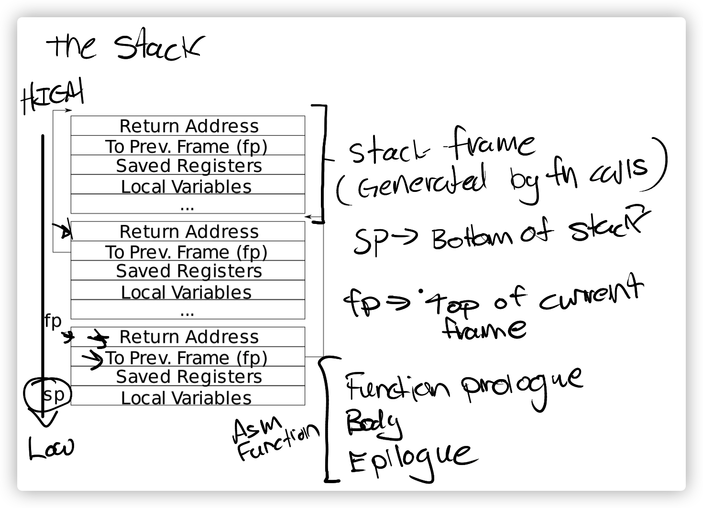

6.S081 lab4 traps
RISC-V assembly
这是一个简单的RISC-V汇编热身关卡。
我们需要查看user/call.asm来回答一些问题，其主要内容如下：
1 | int g(int x) { |
Which registers contain arguments to functions? For example, which register holds 13 in main’s call to
printf?
根据RISC-V的 calling convention，a0-a7,fa0-fa7包含了函数的参数。调用printf时，a0为格式化字符串，a1是 12，a2是 13。
Where is the call to function
fin the assembly code for main? Where is the call tog? (Hint: the compiler may inline functions.)
由于f和g函数都是简单的常数计算，传递的参数也是常数 8，所以函数调用被编译器优化掉了，在0x26位置，直接将函数调用结果立即数 12 载入寄存器a1。
At what address is the function
printflocated?
从代码中看，很显然，在0x638得位置。
What value is in the register
rajust after thejalrtoprintfinmain?
jalr指令是链接并跳转，将返回地址保存到ra寄存器，所以应为0x38。
2
printf("H%x Wo%s", 57616, &i);
运行以上代码，输出HE110 World。数字 57616 的 16 进制表示为 0xE110；RISC-V采用小端法表示，16 进制的 72、6c、64、00 表示字符串“rld\0”，如果改为大端法，则应反过来，变为i=0x726c6400。
该printf调用少了一个参数，根据 calling convention，对y=%d会取a2的值进行输出。
Backtrace
该步骤需要实现一个backtrace函数，打印出调用轨迹，即每次调用的返回地址。
xv6 运行时的 stack 结构如下图：

s0/fp中存储着当前的 frame pointer，fp-8指向返回地址，fp-16指向上一个fp地址。
所以我们只需要不断打印当前fp的返回地址并向前追溯，直到 stack 顶部。
首先在kernel/riscv.h添加内联汇编函数以获取fp值：
1 | static inline uint64 |
然后在kernel/printf.c实现backtrace：
1 | void |
之后在sys_sleep和panic中加入对backtrace的调用即可。
Alarm
本关需要实现一个sigalarm(interval, handler)系统调用，cpu 每消耗 interval 个 ticks 后，调用一次 handler 函数。
首先要在user/user.h添加对新系统调用的用户接口：
1 | int sigalarm(int ticks, void (*handler)()); |
sigreturn是一个被设计用来帮助我们实现sigalarm的函数，每个handler执行结束后，都调用sigreturn。
首先要在proc中添加新的字段，记录interval，handler以及所需的辅助变量，在allocpoc中对它们进行初始化，在系统调用执行时，保存相应的值到proc中。
1 | uint64 |
之后，我们需要在usertrap识别到 timer interrupt 时，进行处理，hints 告诉我们，是which_dev == 2。
1 | // give up the CPU if this is a timer interrupt. |
此时只需让sigreturn直接返回 0，这样简单地添加代码，可以让test0打印出 alarm，但是随后，程序便逻辑崩溃，无法通过测试。这是因为当 kernle 处理完 time interru，回到用户模式，pc 指向 handler 的位置，之后开始执行 handler 函数，在 handler 函数尾部，调用sigreturn陷入 kernel，并无操作，再次返回用户态，执行 handler 尾部的ret。此时用于ret指令的返回地址寄存器ra所存储的值，是在 time interrupt 之时，test 函数执行中产生的ra的值，并非是 time interrupt 发生时，正在执行的代码地址，所以程序不能返回正确位置，并且 handler 执行过程中，修改了的部分寄存器也需要恢复。
于是，我们需要在 handler 执行前保存tramframe，在执行后的sigreturn中恢复tramframe，让代码返回到正确的位置执行，并使寄存器的数值复原。同时，根据 hints，为了防止 handler 执行过程中被重复调用，添加permission字段来进行控制，此外，interval==0时，意味着取消 alarm。
1 | uint64 |
在usertrap中：
1 | if(which_dev == 2) { |
到此，便完成了 lab4 traps。
此外，还有一点，笔者曾尝试只保存tramframe中的caller save寄存器，但是无法通过测试。最终查看asm文件发现：callee save寄存器是在被调用函数尾部的 ret 指令前进行恢复的，但是在sigreturn中通过恢复epc的方式，将pc直接指向了被 time interrupt 打断执行的代码位置，所以callee save寄存器在被修改后并未被复原，我们必须保存trapframe中的所有寄存器。
最终代码见github 仓库。
6.S081 lab4 traps